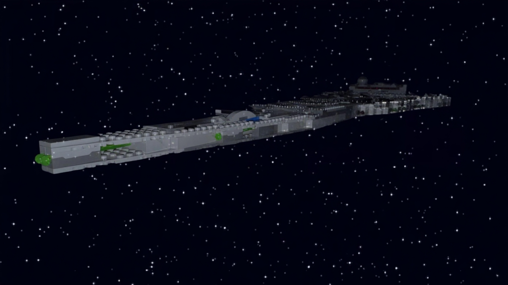
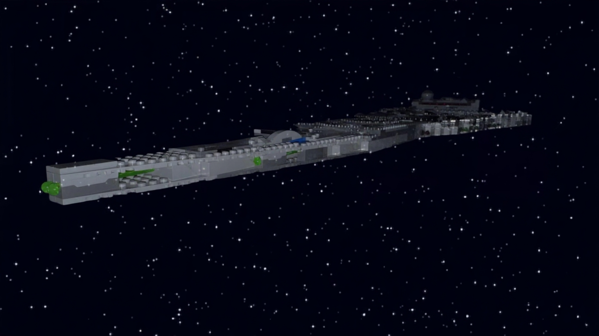

About Me
Family
I live in a family of six. I am the oldest of the four children, I have two younger sisters and a younger brother. I have over 30 cousins on my moms side, and four on my dads side. But overall I have a huge family on both sides. And there spread all throughout the country and world. We have no pets due to allergies from me and one of my younger sisters. We have a trucking company thats been in the family for five generations. And last summer I worked at my families shop and did work on some of the trucks and did a lot of tires, a lot!
Interest
I have a lot of interests, obviously technology is one of them If I've made this website. But my interest in tech has grown over the past 5 years or so, and that interest has resulted in me joining a robotics class and taking a Computer Software Development Course at Indian Hills. Another one of my interests is cars, mainly GM's vehicles, but I know just a little of everything in America's most popular car brands. I also have an interest in Lego's, right now I have 31 lego's which is 19,897 pieces, below is a table of all of my current lego's, two of those are technic lego's, one is an icon, one was custom built by me (No Instructions, Pure Imagination), and the others are all Star Wars. One other interest I have is photography, hence all of my pictures on my pictures page. Which brings up my final interest, Star Wars, every since my mom introduced me to Star Wars I've always been hooked, I've watched all the movies, most of the shows, and watch videos about the franchise, you could ask me anything and I'd probably have an answer for you.
| Set Name | Set Pieces | Set Year | Set Category |
|---|---|---|---|
| Chevrolet Camaro Z28 | 1456 | 2022 | icons |
| Dozer Compactor | 171 | 2017 | Technic |
| Rally Car | 1005 | 2018 | Technic |
| Custom Star Destroyer | 1261 | 2023 | Star Wars |
| Jedi Defense 1 | 58 | 2002 | Star Wars |
| Imperial Star Destroyer | 1555 | 2024 | Star Wars |
| AT-AT Driver Helmet | 730 | 2025 | Star Wars |
| Kylo Ren's Shuttle Microfighter | 72 | 2020 | Star Wars |
| Kylo Ren | 86 | 2016 | Star Wars |
| K-2SO | 169 | 2016 | Star Wars |
| X-Wing Starfighter | 1953 | 2023 | Star Wars |
| Boba Fett Mech | 155 | 2023 | Star Wars |
| Action Battle Hoth Generator Attack | 235 | 2019 | Star Wars |
| Imperial Shuttle | 660 | 2021 | Star Wars |
| Kylo Ren's TIE Fighter | 630 | 2017 | Star Wars |
| Imperial TIE Fighter | 432 | 2021 | Star Wars |
| Boba Fett's Starship | 593 | 2021 | Star Wars |
| Sith TIE Fighter | 470 | 2020 | Star Wars |
| Kylo Ren's Shuttle | 1005 | 2019 | Star Wars |
| The Mandalorian Helmet | 584 | 2022 | Star Wars |
| The Child | 1075 | 2020 | Star Wars |
| Knights of Ren Transport Ship | 595 | 2020 | Star Wars |
| Imperial Armored Marauder | 478 | 2021 | Star Wars |
| Dark Trooper Attack | 166 | 2022 | Star Wars |
| Darth Vader Helmet | 834 | 2021 | Star Wars |
| Inquisitor Transport Scythe | 924 | 2022 | Star Wars |
| Obi-Wan Kenobi's Jedi Starfighter | 282 | 2022 | Star Wars |
| Millennium Falcon | 1353 | 2019 | Star Wars |
| Brick-Built Star Wars Logo | 700 | 2025 | Star Wars |
| Sith Troopers Battle Pack | 105 | 2020 | Star Wars |
| Sith Troopers Battle Pack | 105 | 2020 | Star Wars |


 

School
I am a junior this year at Eddyville-Blakesburg-Fremont Jr/Sr Highschool. I'm also a college student at Indian Hills Community College. Last year was my first year in robotics, we didn't go to competition but it helped me gain the nessecary experience for this year, and resulted in me becoming the Team Leader for the rest of my years in robotics. As for the college course, this is my first year in this course, I decided to do it because its free, it will help with robotics, and will help my job in the future. After I graduate, I plan on going to Indian Hills, to get my Gen Eds over with since I get a $1000 scholarship when I pass one of there classes. Then I plan on going to Iowa State University to study Computer Engineering, or something similiar to that if I change my mind, either way it will deal with tech and computers.